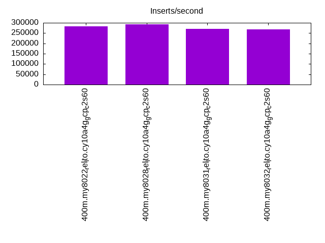

This is a report for the insert benchmark with 400M docs and 20 client(s). It is generated by scripts (bash, awk, sed) and Tufte might not be impressed. An overview of the insert benchmark is here and a short update is here. Below, by DBMS, I mean DBMS+version.config. An example is my8020.c10b40 where my means MySQL, 8020 is version 8.0.20 and c10b40 is the name for the configuration file.
This is a report for the insert benchmark with 400M docs and 20 client(s). It is generated by scripts (bash, awk, sed) and Tufte might not be impressed. An overview of the insert benchmark is here and a short update is here. Below, by DBMS, I mean DBMS+version.config. An example is my8020.c10b40 where my means MySQL, 8020 is version 8.0.20 and c10b40 is the name for the configuration file.The test server is c2-standard-60 from GCP with 30 cores, hyperthreads disabled, 240G RAM and 3T of NVMe (XFS with RAID0 over 8 devices). The benchmark was run with 20 clients and there were 1 or 2 connections per client (1 for queries, 1 for inserts). It uses 1 table. It loads 400M rows per table without secondary indexes, creates secondary indexes, loads another 400M rows per table then does 3 read+write tests for one hour each that do queries as fast as possible with 100, 500 and then 1000 writes/second/client concurrent with the queries. The database is cached by the OS but not by InnoDB. Clients and the DBMS share one server. The per-database configs are in the per-database subdirectories here.
The tested DBMS are:
The numbers are inserts/s for l.i0 and l.i1, indexed docs (or rows) /s for l.x and queries/s for q*.2. The values are the average rate over the entire test for inserts (IPS) and queries (QPS). The range of values for IPS and QPS is split into 3 parts: bottom 25%, middle 50%, top 25%. Values in the bottom 25% have a red background, values in the top 25% have a green background and values in the middle have no color. A gray background is used for values that can be ignored because the DBMS did not sustain the target insert rate. Red backgrounds are not used when the minimum value is within 80% of the max value.
| dbms | l.i0 | l.x | l.i1 | q100.1 | q500.1 | q1000.1 |
|---|---|---|---|---|---|---|
| 400m.my8022_rel_lto.cy10a4g_gcp_c2s60 | 283688 | 192263 | 27069 | 27495 | 7242 | 3673 |
| 400m.my8028_rel_lto.cy10a4g_gcp_c2s60 | 293470 | 163774 | 25541 | 27342 | 6440 | 4613 |
| 400m.my8031_rel_lto.cy10a4g_gcp_c2s60 | 271555 | 142435 | 25374 | 27646 | 6518 | 4662 |
| 400m.my8032_rel_lto.cy10a4g_gcp_c2s60 | 267917 | 143559 | 24938 | 26507 | 6407 | 4568 |
This table has relative throughput, throughput for the DBMS relative to the DBMS in the first line, using the absolute throughput from the previous table.
| dbms | l.i0 | l.x | l.i1 | q100.1 | q500.1 | q1000.1 |
|---|---|---|---|---|---|---|
| 400m.my8022_rel_lto.cy10a4g_gcp_c2s60 | 1.00 | 1.00 | 1.00 | 1.00 | 1.00 | 1.00 |
| 400m.my8028_rel_lto.cy10a4g_gcp_c2s60 | 1.03 | 0.85 | 0.94 | 0.99 | 0.89 | 1.26 |
| 400m.my8031_rel_lto.cy10a4g_gcp_c2s60 | 0.96 | 0.74 | 0.94 | 1.01 | 0.90 | 1.27 |
| 400m.my8032_rel_lto.cy10a4g_gcp_c2s60 | 0.94 | 0.75 | 0.92 | 0.96 | 0.88 | 1.24 |
This lists the average rate of inserts/s for the tests that do inserts concurrent with queries. For such tests the query rate is listed in the table above. The read+write tests are setup so that the insert rate should match the target rate every second. Cells that are not at least 95% of the target have a red background to indicate a failure to satisfy the target.
| dbms | q100.1 | q500.1 | q1000.1 |
|---|---|---|---|
| my8022_rel_lto.cy10a4g_gcp_c2s60 | 1977 | 9885 | 14303 |
| my8028_rel_lto.cy10a4g_gcp_c2s60 | 1977 | 9885 | 12636 |
| my8031_rel_lto.cy10a4g_gcp_c2s60 | 1977 | 9885 | 12614 |
| my8032_rel_lto.cy10a4g_gcp_c2s60 | 1977 | 9885 | 12592 |
| target | 2000 | 10000 | 20000 |
l.i0: load without secondary indexes. Graphs for performance per 1-second interval are here.
Average throughput:
Insert response time histogram: each cell has the percentage of responses that take <= the time in the header and max is the max response time in seconds. For the max column values in the top 25% of the range have a red background and in the bottom 25% of the range have a green background. The red background is not used when the min value is within 80% of the max value.
| dbms | 256us | 1ms | 4ms | 16ms | 64ms | 256ms | 1s | 4s | 16s | gt | max |
|---|---|---|---|---|---|---|---|---|---|---|---|
| my8022_rel_lto.cy10a4g_gcp_c2s60 | 0.293 | 0.800 | 98.856 | 0.012 | 0.039 | nonzero | 0.259 | ||||
| my8028_rel_lto.cy10a4g_gcp_c2s60 | 0.333 | 0.979 | 98.619 | 0.032 | 0.036 | 0.244 | |||||
| my8031_rel_lto.cy10a4g_gcp_c2s60 | 0.303 | 0.687 | 98.934 | 0.039 | 0.036 | nonzero | 0.262 | ||||
| my8032_rel_lto.cy10a4g_gcp_c2s60 | 0.266 | 0.605 | 99.054 | 0.039 | 0.036 | 0.231 |
Performance metrics for the DBMS listed above. Some are normalized by throughput, others are not. Legend for results is here.
ips qps rps rmbps wps wmbps rpq rkbpq wpi wkbpi csps cpups cspq cpupq dbgb1 dbgb2 rss maxop p50 p99 tag 283688 0 0 0.0 845.5 113.9 0.000 0.000 0.003 0.411 304760 58.1 1.074 61 44.7 173.3 0.6 0.259 14384 11787 400m.my8022_rel_lto.cy10a4g_gcp_c2s60 293470 0 0 0.0 836.0 108.5 0.000 0.000 0.003 0.379 285901 59.5 0.974 61 44.6 173.1 0.7 0.244 14884 11987 400m.my8028_rel_lto.cy10a4g_gcp_c2s60 271555 0 0 0.0 778.4 103.6 0.000 0.000 0.003 0.391 246787 59.8 0.909 66 44.5 173.1 0.7 0.262 13785 10988 400m.my8031_rel_lto.cy10a4g_gcp_c2s60 267917 0 0 0.0 764.1 90.4 0.000 0.000 0.003 0.346 249098 60.0 0.930 67 44.4 173.0 0.7 0.231 13585 11088 400m.my8032_rel_lto.cy10a4g_gcp_c2s60
l.x: create secondary indexes.
Average throughput:
Performance metrics for the DBMS listed above. Some are normalized by throughput, others are not. Legend for results is here.
ips qps rps rmbps wps wmbps rpq rkbpq wpi wkbpi csps cpups cspq cpupq dbgb1 dbgb2 rss maxop p50 p99 tag 192263 0 0 0.0 911.1 202.1 0.000 0.000 0.005 1.076 11376 3.6 0.059 6 77.2 205.7 0.7 0.008 NA NA 400m.my8022_rel_lto.cy10a4g_gcp_c2s60 163774 0 814 56.4 2652.7 193.7 0.005 0.353 0.016 1.211 17131 11.4 0.105 21 77.0 205.6 0.7 0.005 NA NA 400m.my8028_rel_lto.cy10a4g_gcp_c2s60 142435 0 708 49.1 2454.9 168.5 0.005 0.353 0.017 1.211 15943 11.4 0.112 24 76.9 205.5 0.7 0.005 NA NA 400m.my8031_rel_lto.cy10a4g_gcp_c2s60 143559 0 713 49.4 2425.9 169.8 0.005 0.352 0.017 1.211 15253 11.5 0.106 24 76.9 205.4 0.7 0.005 NA NA 400m.my8032_rel_lto.cy10a4g_gcp_c2s60
l.i1: continue load after secondary indexes created. Graphs for performance per 1-second interval are here.
Average throughput:
Insert response time histogram: each cell has the percentage of responses that take <= the time in the header and max is the max response time in seconds. For the max column values in the top 25% of the range have a red background and in the bottom 25% of the range have a green background. The red background is not used when the min value is within 80% of the max value.
| dbms | 256us | 1ms | 4ms | 16ms | 64ms | 256ms | 1s | 4s | 16s | gt | max |
|---|---|---|---|---|---|---|---|---|---|---|---|
| my8022_rel_lto.cy10a4g_gcp_c2s60 | 0.794 | 28.167 | 56.874 | 13.890 | 0.275 | nonzero | 1.128 | ||||
| my8028_rel_lto.cy10a4g_gcp_c2s60 | 0.436 | 29.707 | 53.880 | 15.496 | 0.479 | 0.001 | 1.203 | ||||
| my8031_rel_lto.cy10a4g_gcp_c2s60 | 0.232 | 29.912 | 53.774 | 15.574 | 0.507 | 0.001 | 1.297 | ||||
| my8032_rel_lto.cy10a4g_gcp_c2s60 | 0.205 | 28.511 | 54.723 | 16.063 | 0.497 | 0.001 | 1.242 |
Performance metrics for the DBMS listed above. Some are normalized by throughput, others are not. Legend for results is here.
ips qps rps rmbps wps wmbps rpq rkbpq wpi wkbpi csps cpups cspq cpupq dbgb1 dbgb2 rss maxop p50 p99 tag 27069 0 4 0.1 17883.8 444.2 0.000 0.004 0.661 16.805 276693 19.8 10.222 219 184.6 314.5 0.6 1.128 1448 100 400m.my8022_rel_lto.cy10a4g_gcp_c2s60 25541 0 2 0.0 16779.5 432.7 0.000 0.002 0.657 17.348 234629 20.5 9.186 241 184.2 314.0 0.7 1.203 1349 100 400m.my8028_rel_lto.cy10a4g_gcp_c2s60 25374 0 0 0.0 16669.2 432.5 0.000 0.001 0.657 17.454 231990 21.8 9.143 258 184.0 313.8 0.7 1.297 1349 100 400m.my8031_rel_lto.cy10a4g_gcp_c2s60 24938 0 0 0.0 16374.8 422.8 0.000 0.001 0.657 17.362 229692 21.6 9.211 260 183.8 313.6 0.7 1.242 1299 100 400m.my8032_rel_lto.cy10a4g_gcp_c2s60
q100.1: range queries with 100 insert/s per client. Graphs for performance per 1-second interval are here.
Average throughput:
Query response time histogram: each cell has the percentage of responses that take <= the time in the header and max is the max response time in seconds. For max values in the top 25% of the range have a red background and in the bottom 25% of the range have a green background. The red background is not used when the min value is within 80% of the max value.
| dbms | 256us | 1ms | 4ms | 16ms | 64ms | 256ms | 1s | 4s | 16s | gt | max |
|---|---|---|---|---|---|---|---|---|---|---|---|
| my8022_rel_lto.cy10a4g_gcp_c2s60 | 34.435 | 55.873 | 6.285 | 3.210 | 0.197 | 0.001 | 0.205 | ||||
| my8028_rel_lto.cy10a4g_gcp_c2s60 | 33.286 | 57.028 | 6.351 | 3.136 | 0.197 | 0.002 | 0.239 | ||||
| my8031_rel_lto.cy10a4g_gcp_c2s60 | 32.308 | 58.027 | 6.550 | 2.950 | 0.164 | 0.001 | 0.210 | ||||
| my8032_rel_lto.cy10a4g_gcp_c2s60 | 32.045 | 57.710 | 6.806 | 3.250 | 0.188 | 0.001 | 0.200 |
Insert response time histogram: each cell has the percentage of responses that take <= the time in the header and max is the max response time in seconds. For max values in the top 25% of the range have a red background and in the bottom 25% of the range have a green background. The red background is not used when the min value is within 80% of the max value.
| dbms | 256us | 1ms | 4ms | 16ms | 64ms | 256ms | 1s | 4s | 16s | gt | max |
|---|---|---|---|---|---|---|---|---|---|---|---|
| my8022_rel_lto.cy10a4g_gcp_c2s60 | 15.315 | 74.165 | 10.463 | 0.057 | 0.332 | ||||||
| my8028_rel_lto.cy10a4g_gcp_c2s60 | 32.968 | 58.508 | 8.107 | 0.417 | 0.914 | ||||||
| my8031_rel_lto.cy10a4g_gcp_c2s60 | 32.892 | 59.718 | 7.054 | 0.336 | 0.712 | ||||||
| my8032_rel_lto.cy10a4g_gcp_c2s60 | 0.001 | 28.915 | 62.910 | 7.739 | 0.435 | 0.588 |
Performance metrics for the DBMS listed above. Some are normalized by throughput, others are not. Legend for results is here.
ips qps rps rmbps wps wmbps rpq rkbpq wpi wkbpi csps cpups cspq cpupq dbgb1 dbgb2 rss maxop p50 p99 tag 1977 27495 126 4.5 12711.3 263.9 0.005 0.168 6.430 136.702 297151 38.5 10.808 420 187.6 317.4 0.7 0.205 1438 224 400m.my8022_rel_lto.cy10a4g_gcp_c2s60 1977 27342 124 4.5 12513.5 258.9 0.005 0.167 6.330 134.116 300158 39.1 10.978 429 187.1 316.9 0.7 0.239 1438 192 400m.my8028_rel_lto.cy10a4g_gcp_c2s60 1977 27646 130 4.5 12236.4 256.1 0.005 0.168 6.190 132.644 295028 40.8 10.671 443 186.9 316.7 0.7 0.210 1454 208 400m.my8031_rel_lto.cy10a4g_gcp_c2s60 1977 26507 118 4.5 12446.3 260.1 0.004 0.172 6.296 134.713 294453 39.7 11.108 449 186.7 316.5 0.7 0.200 1390 192 400m.my8032_rel_lto.cy10a4g_gcp_c2s60
q500.1: range queries with 500 insert/s per client. Graphs for performance per 1-second interval are here.
Average throughput:
Query response time histogram: each cell has the percentage of responses that take <= the time in the header and max is the max response time in seconds. For max values in the top 25% of the range have a red background and in the bottom 25% of the range have a green background. The red background is not used when the min value is within 80% of the max value.
| dbms | 256us | 1ms | 4ms | 16ms | 64ms | 256ms | 1s | 4s | 16s | gt | max |
|---|---|---|---|---|---|---|---|---|---|---|---|
| my8022_rel_lto.cy10a4g_gcp_c2s60 | 32.909 | 31.711 | 11.064 | 21.733 | 2.580 | 0.003 | 0.185 | ||||
| my8028_rel_lto.cy10a4g_gcp_c2s60 | 31.412 | 29.900 | 12.497 | 22.831 | 3.333 | 0.027 | nonzero | 0.273 | |||
| my8031_rel_lto.cy10a4g_gcp_c2s60 | 29.326 | 32.132 | 12.706 | 22.604 | 3.206 | 0.025 | nonzero | 0.269 | |||
| my8032_rel_lto.cy10a4g_gcp_c2s60 | 29.236 | 32.122 | 12.393 | 22.877 | 3.347 | 0.025 | nonzero | 0.267 |
Insert response time histogram: each cell has the percentage of responses that take <= the time in the header and max is the max response time in seconds. For max values in the top 25% of the range have a red background and in the bottom 25% of the range have a green background. The red background is not used when the min value is within 80% of the max value.
| dbms | 256us | 1ms | 4ms | 16ms | 64ms | 256ms | 1s | 4s | 16s | gt | max |
|---|---|---|---|---|---|---|---|---|---|---|---|
| my8022_rel_lto.cy10a4g_gcp_c2s60 | 0.193 | 8.182 | 62.270 | 29.323 | 0.031 | 0.350 | |||||
| my8028_rel_lto.cy10a4g_gcp_c2s60 | 0.270 | 9.666 | 57.814 | 31.038 | 1.212 | 0.956 | |||||
| my8031_rel_lto.cy10a4g_gcp_c2s60 | 0.134 | 8.956 | 58.400 | 31.228 | 1.283 | 0.817 | |||||
| my8032_rel_lto.cy10a4g_gcp_c2s60 | 0.164 | 10.018 | 58.629 | 30.011 | 1.177 | 0.958 |
Performance metrics for the DBMS listed above. Some are normalized by throughput, others are not. Legend for results is here.
ips qps rps rmbps wps wmbps rpq rkbpq wpi wkbpi csps cpups cspq cpupq dbgb1 dbgb2 rss maxop p50 p99 tag 9885 7242 160 2.1 18582.2 367.3 0.022 0.297 1.880 38.049 382152 23.7 52.770 982 197.0 326.8 0.7 0.185 352 256 400m.my8022_rel_lto.cy10a4g_gcp_c2s60 9885 6440 207 2.7 18060.9 359.1 0.032 0.434 1.827 37.197 363619 23.3 56.463 1085 196.6 326.4 0.7 0.273 320 224 400m.my8028_rel_lto.cy10a4g_gcp_c2s60 9885 6518 233 3.0 18093.0 362.5 0.036 0.474 1.830 37.558 363443 24.5 55.758 1128 196.3 326.1 0.7 0.269 320 224 400m.my8031_rel_lto.cy10a4g_gcp_c2s60 9885 6407 175 2.5 17790.0 359.0 0.027 0.402 1.800 37.196 359334 24.5 56.087 1147 196.2 326.0 0.7 0.267 320 224 400m.my8032_rel_lto.cy10a4g_gcp_c2s60
q1000.1: range queries with 1000 insert/s per client. Graphs for performance per 1-second interval are here.
Average throughput:
Query response time histogram: each cell has the percentage of responses that take <= the time in the header and max is the max response time in seconds. For max values in the top 25% of the range have a red background and in the bottom 25% of the range have a green background. The red background is not used when the min value is within 80% of the max value.
| dbms | 256us | 1ms | 4ms | 16ms | 64ms | 256ms | 1s | 4s | 16s | gt | max |
|---|---|---|---|---|---|---|---|---|---|---|---|
| my8022_rel_lto.cy10a4g_gcp_c2s60 | 28.780 | 21.149 | 9.625 | 31.236 | 9.065 | 0.145 | 0.248 | ||||
| my8028_rel_lto.cy10a4g_gcp_c2s60 | 28.902 | 26.661 | 13.584 | 24.445 | 6.168 | 0.240 | nonzero | 0.364 | |||
| my8031_rel_lto.cy10a4g_gcp_c2s60 | 26.173 | 29.249 | 13.929 | 24.388 | 6.032 | 0.229 | nonzero | 0.355 | |||
| my8032_rel_lto.cy10a4g_gcp_c2s60 | 26.278 | 29.185 | 13.480 | 24.582 | 6.231 | 0.244 | nonzero | 0.394 |
Insert response time histogram: each cell has the percentage of responses that take <= the time in the header and max is the max response time in seconds. For max values in the top 25% of the range have a red background and in the bottom 25% of the range have a green background. The red background is not used when the min value is within 80% of the max value.
| dbms | 256us | 1ms | 4ms | 16ms | 64ms | 256ms | 1s | 4s | 16s | gt | max |
|---|---|---|---|---|---|---|---|---|---|---|---|
| my8022_rel_lto.cy10a4g_gcp_c2s60 | 0.366 | 5.542 | 48.964 | 44.733 | 0.395 | 0.571 | |||||
| my8028_rel_lto.cy10a4g_gcp_c2s60 | 0.235 | 5.871 | 47.967 | 43.305 | 2.620 | 0.002 | 1.287 | ||||
| my8031_rel_lto.cy10a4g_gcp_c2s60 | 0.112 | 5.304 | 48.386 | 43.551 | 2.644 | 0.003 | 1.162 | ||||
| my8032_rel_lto.cy10a4g_gcp_c2s60 | 0.124 | 5.392 | 48.177 | 43.716 | 2.590 | 0.001 | 1.370 |
Performance metrics for the DBMS listed above. Some are normalized by throughput, others are not. Legend for results is here.
ips qps rps rmbps wps wmbps rpq rkbpq wpi wkbpi csps cpups cspq cpupq dbgb1 dbgb2 rss maxop p50 p99 tag 14303 3673 207 2.8 17827.9 376.2 0.056 0.782 1.246 26.935 421395 23.7 114.718 1936 209.1 338.9 0.7 0.248 176 128 400m.my8022_rel_lto.cy10a4g_gcp_c2s60 12636 4613 183 2.7 16363.3 355.8 0.040 0.597 1.295 28.830 353855 23.7 76.712 1541 208.7 338.5 0.7 0.364 224 144 400m.my8028_rel_lto.cy10a4g_gcp_c2s60 12614 4662 211 2.9 16413.0 360.0 0.045 0.631 1.301 29.225 350666 25.1 75.213 1615 208.4 338.2 0.7 0.355 240 144 400m.my8031_rel_lto.cy10a4g_gcp_c2s60 12592 4568 187 2.7 16228.7 357.2 0.041 0.615 1.289 29.052 348287 24.9 76.245 1635 208.2 338.0 0.7 0.394 224 144 400m.my8032_rel_lto.cy10a4g_gcp_c2s60
l.i0: load without secondary indexes
Performance metrics for all DBMS, not just the ones listed above. Some are normalized by throughput, others are not. Legend for results is here.
ips qps rps rmbps wps wmbps rpq rkbpq wpi wkbpi csps cpups cspq cpupq dbgb1 dbgb2 rss maxop p50 p99 tag 283688 0 0 0.0 845.5 113.9 0.000 0.000 0.003 0.411 304760 58.1 1.074 61 44.7 173.3 0.6 0.259 14384 11787 400m.my8022_rel_lto.cy10a4g_gcp_c2s60 293470 0 0 0.0 836.0 108.5 0.000 0.000 0.003 0.379 285901 59.5 0.974 61 44.6 173.1 0.7 0.244 14884 11987 400m.my8028_rel_lto.cy10a4g_gcp_c2s60 271555 0 0 0.0 778.4 103.6 0.000 0.000 0.003 0.391 246787 59.8 0.909 66 44.5 173.1 0.7 0.262 13785 10988 400m.my8031_rel_lto.cy10a4g_gcp_c2s60 267917 0 0 0.0 764.1 90.4 0.000 0.000 0.003 0.346 249098 60.0 0.930 67 44.4 173.0 0.7 0.231 13585 11088 400m.my8032_rel_lto.cy10a4g_gcp_c2s60
l.x: create secondary indexes
Performance metrics for all DBMS, not just the ones listed above. Some are normalized by throughput, others are not. Legend for results is here.
ips qps rps rmbps wps wmbps rpq rkbpq wpi wkbpi csps cpups cspq cpupq dbgb1 dbgb2 rss maxop p50 p99 tag 192263 0 0 0.0 911.1 202.1 0.000 0.000 0.005 1.076 11376 3.6 0.059 6 77.2 205.7 0.7 0.008 NA NA 400m.my8022_rel_lto.cy10a4g_gcp_c2s60 163774 0 814 56.4 2652.7 193.7 0.005 0.353 0.016 1.211 17131 11.4 0.105 21 77.0 205.6 0.7 0.005 NA NA 400m.my8028_rel_lto.cy10a4g_gcp_c2s60 142435 0 708 49.1 2454.9 168.5 0.005 0.353 0.017 1.211 15943 11.4 0.112 24 76.9 205.5 0.7 0.005 NA NA 400m.my8031_rel_lto.cy10a4g_gcp_c2s60 143559 0 713 49.4 2425.9 169.8 0.005 0.352 0.017 1.211 15253 11.5 0.106 24 76.9 205.4 0.7 0.005 NA NA 400m.my8032_rel_lto.cy10a4g_gcp_c2s60
l.i1: continue load after secondary indexes created
Performance metrics for all DBMS, not just the ones listed above. Some are normalized by throughput, others are not. Legend for results is here.
ips qps rps rmbps wps wmbps rpq rkbpq wpi wkbpi csps cpups cspq cpupq dbgb1 dbgb2 rss maxop p50 p99 tag 27069 0 4 0.1 17883.8 444.2 0.000 0.004 0.661 16.805 276693 19.8 10.222 219 184.6 314.5 0.6 1.128 1448 100 400m.my8022_rel_lto.cy10a4g_gcp_c2s60 25541 0 2 0.0 16779.5 432.7 0.000 0.002 0.657 17.348 234629 20.5 9.186 241 184.2 314.0 0.7 1.203 1349 100 400m.my8028_rel_lto.cy10a4g_gcp_c2s60 25374 0 0 0.0 16669.2 432.5 0.000 0.001 0.657 17.454 231990 21.8 9.143 258 184.0 313.8 0.7 1.297 1349 100 400m.my8031_rel_lto.cy10a4g_gcp_c2s60 24938 0 0 0.0 16374.8 422.8 0.000 0.001 0.657 17.362 229692 21.6 9.211 260 183.8 313.6 0.7 1.242 1299 100 400m.my8032_rel_lto.cy10a4g_gcp_c2s60
q100.1: range queries with 100 insert/s per client
Performance metrics for all DBMS, not just the ones listed above. Some are normalized by throughput, others are not. Legend for results is here.
ips qps rps rmbps wps wmbps rpq rkbpq wpi wkbpi csps cpups cspq cpupq dbgb1 dbgb2 rss maxop p50 p99 tag 1977 27495 126 4.5 12711.3 263.9 0.005 0.168 6.430 136.702 297151 38.5 10.808 420 187.6 317.4 0.7 0.205 1438 224 400m.my8022_rel_lto.cy10a4g_gcp_c2s60 1977 27342 124 4.5 12513.5 258.9 0.005 0.167 6.330 134.116 300158 39.1 10.978 429 187.1 316.9 0.7 0.239 1438 192 400m.my8028_rel_lto.cy10a4g_gcp_c2s60 1977 27646 130 4.5 12236.4 256.1 0.005 0.168 6.190 132.644 295028 40.8 10.671 443 186.9 316.7 0.7 0.210 1454 208 400m.my8031_rel_lto.cy10a4g_gcp_c2s60 1977 26507 118 4.5 12446.3 260.1 0.004 0.172 6.296 134.713 294453 39.7 11.108 449 186.7 316.5 0.7 0.200 1390 192 400m.my8032_rel_lto.cy10a4g_gcp_c2s60
q500.1: range queries with 500 insert/s per client
Performance metrics for all DBMS, not just the ones listed above. Some are normalized by throughput, others are not. Legend for results is here.
ips qps rps rmbps wps wmbps rpq rkbpq wpi wkbpi csps cpups cspq cpupq dbgb1 dbgb2 rss maxop p50 p99 tag 9885 7242 160 2.1 18582.2 367.3 0.022 0.297 1.880 38.049 382152 23.7 52.770 982 197.0 326.8 0.7 0.185 352 256 400m.my8022_rel_lto.cy10a4g_gcp_c2s60 9885 6440 207 2.7 18060.9 359.1 0.032 0.434 1.827 37.197 363619 23.3 56.463 1085 196.6 326.4 0.7 0.273 320 224 400m.my8028_rel_lto.cy10a4g_gcp_c2s60 9885 6518 233 3.0 18093.0 362.5 0.036 0.474 1.830 37.558 363443 24.5 55.758 1128 196.3 326.1 0.7 0.269 320 224 400m.my8031_rel_lto.cy10a4g_gcp_c2s60 9885 6407 175 2.5 17790.0 359.0 0.027 0.402 1.800 37.196 359334 24.5 56.087 1147 196.2 326.0 0.7 0.267 320 224 400m.my8032_rel_lto.cy10a4g_gcp_c2s60
q1000.1: range queries with 1000 insert/s per client
Performance metrics for all DBMS, not just the ones listed above. Some are normalized by throughput, others are not. Legend for results is here.
ips qps rps rmbps wps wmbps rpq rkbpq wpi wkbpi csps cpups cspq cpupq dbgb1 dbgb2 rss maxop p50 p99 tag 14303 3673 207 2.8 17827.9 376.2 0.056 0.782 1.246 26.935 421395 23.7 114.718 1936 209.1 338.9 0.7 0.248 176 128 400m.my8022_rel_lto.cy10a4g_gcp_c2s60 12636 4613 183 2.7 16363.3 355.8 0.040 0.597 1.295 28.830 353855 23.7 76.712 1541 208.7 338.5 0.7 0.364 224 144 400m.my8028_rel_lto.cy10a4g_gcp_c2s60 12614 4662 211 2.9 16413.0 360.0 0.045 0.631 1.301 29.225 350666 25.1 75.213 1615 208.4 338.2 0.7 0.355 240 144 400m.my8031_rel_lto.cy10a4g_gcp_c2s60 12592 4568 187 2.7 16228.7 357.2 0.041 0.615 1.289 29.052 348287 24.9 76.245 1635 208.2 338.0 0.7 0.394 224 144 400m.my8032_rel_lto.cy10a4g_gcp_c2s60
Insert response time histogram
256us 1ms 4ms 16ms 64ms 256ms 1s 4s 16s gt max tag 0.000 0.293 0.800 98.856 0.012 0.039 nonzero 0.000 0.000 0.000 0.259 my8022_rel_lto.cy10a4g_gcp_c2s60 0.000 0.333 0.979 98.619 0.032 0.036 0.000 0.000 0.000 0.000 0.244 my8028_rel_lto.cy10a4g_gcp_c2s60 0.000 0.303 0.687 98.934 0.039 0.036 nonzero 0.000 0.000 0.000 0.262 my8031_rel_lto.cy10a4g_gcp_c2s60 0.000 0.266 0.605 99.054 0.039 0.036 0.000 0.000 0.000 0.000 0.231 my8032_rel_lto.cy10a4g_gcp_c2s60
TODO - determine whether there is data for create index response time
Insert response time histogram
256us 1ms 4ms 16ms 64ms 256ms 1s 4s 16s gt max tag 0.000 0.000 0.794 28.167 56.874 13.890 0.275 nonzero 0.000 0.000 1.128 my8022_rel_lto.cy10a4g_gcp_c2s60 0.000 0.000 0.436 29.707 53.880 15.496 0.479 0.001 0.000 0.000 1.203 my8028_rel_lto.cy10a4g_gcp_c2s60 0.000 0.000 0.232 29.912 53.774 15.574 0.507 0.001 0.000 0.000 1.297 my8031_rel_lto.cy10a4g_gcp_c2s60 0.000 0.000 0.205 28.511 54.723 16.063 0.497 0.001 0.000 0.000 1.242 my8032_rel_lto.cy10a4g_gcp_c2s60
Query response time histogram
256us 1ms 4ms 16ms 64ms 256ms 1s 4s 16s gt max tag 34.435 55.873 6.285 3.210 0.197 0.001 0.000 0.000 0.000 0.000 0.205 my8022_rel_lto.cy10a4g_gcp_c2s60 33.286 57.028 6.351 3.136 0.197 0.002 0.000 0.000 0.000 0.000 0.239 my8028_rel_lto.cy10a4g_gcp_c2s60 32.308 58.027 6.550 2.950 0.164 0.001 0.000 0.000 0.000 0.000 0.210 my8031_rel_lto.cy10a4g_gcp_c2s60 32.045 57.710 6.806 3.250 0.188 0.001 0.000 0.000 0.000 0.000 0.200 my8032_rel_lto.cy10a4g_gcp_c2s60
Insert response time histogram
256us 1ms 4ms 16ms 64ms 256ms 1s 4s 16s gt max tag 0.000 0.000 0.000 15.315 74.165 10.463 0.057 0.000 0.000 0.000 0.332 my8022_rel_lto.cy10a4g_gcp_c2s60 0.000 0.000 0.000 32.968 58.508 8.107 0.417 0.000 0.000 0.000 0.914 my8028_rel_lto.cy10a4g_gcp_c2s60 0.000 0.000 0.000 32.892 59.718 7.054 0.336 0.000 0.000 0.000 0.712 my8031_rel_lto.cy10a4g_gcp_c2s60 0.000 0.000 0.001 28.915 62.910 7.739 0.435 0.000 0.000 0.000 0.588 my8032_rel_lto.cy10a4g_gcp_c2s60
Query response time histogram
256us 1ms 4ms 16ms 64ms 256ms 1s 4s 16s gt max tag 32.909 31.711 11.064 21.733 2.580 0.003 0.000 0.000 0.000 0.000 0.185 my8022_rel_lto.cy10a4g_gcp_c2s60 31.412 29.900 12.497 22.831 3.333 0.027 nonzero 0.000 0.000 0.000 0.273 my8028_rel_lto.cy10a4g_gcp_c2s60 29.326 32.132 12.706 22.604 3.206 0.025 nonzero 0.000 0.000 0.000 0.269 my8031_rel_lto.cy10a4g_gcp_c2s60 29.236 32.122 12.393 22.877 3.347 0.025 nonzero 0.000 0.000 0.000 0.267 my8032_rel_lto.cy10a4g_gcp_c2s60
Insert response time histogram
256us 1ms 4ms 16ms 64ms 256ms 1s 4s 16s gt max tag 0.000 0.000 0.193 8.182 62.270 29.323 0.031 0.000 0.000 0.000 0.350 my8022_rel_lto.cy10a4g_gcp_c2s60 0.000 0.000 0.270 9.666 57.814 31.038 1.212 0.000 0.000 0.000 0.956 my8028_rel_lto.cy10a4g_gcp_c2s60 0.000 0.000 0.134 8.956 58.400 31.228 1.283 0.000 0.000 0.000 0.817 my8031_rel_lto.cy10a4g_gcp_c2s60 0.000 0.000 0.164 10.018 58.629 30.011 1.177 0.000 0.000 0.000 0.958 my8032_rel_lto.cy10a4g_gcp_c2s60
Query response time histogram
256us 1ms 4ms 16ms 64ms 256ms 1s 4s 16s gt max tag 28.780 21.149 9.625 31.236 9.065 0.145 0.000 0.000 0.000 0.000 0.248 my8022_rel_lto.cy10a4g_gcp_c2s60 28.902 26.661 13.584 24.445 6.168 0.240 nonzero 0.000 0.000 0.000 0.364 my8028_rel_lto.cy10a4g_gcp_c2s60 26.173 29.249 13.929 24.388 6.032 0.229 nonzero 0.000 0.000 0.000 0.355 my8031_rel_lto.cy10a4g_gcp_c2s60 26.278 29.185 13.480 24.582 6.231 0.244 nonzero 0.000 0.000 0.000 0.394 my8032_rel_lto.cy10a4g_gcp_c2s60
Insert response time histogram
256us 1ms 4ms 16ms 64ms 256ms 1s 4s 16s gt max tag 0.000 0.000 0.366 5.542 48.964 44.733 0.395 0.000 0.000 0.000 0.571 my8022_rel_lto.cy10a4g_gcp_c2s60 0.000 0.000 0.235 5.871 47.967 43.305 2.620 0.002 0.000 0.000 1.287 my8028_rel_lto.cy10a4g_gcp_c2s60 0.000 0.000 0.112 5.304 48.386 43.551 2.644 0.003 0.000 0.000 1.162 my8031_rel_lto.cy10a4g_gcp_c2s60 0.000 0.000 0.124 5.392 48.177 43.716 2.590 0.001 0.000 0.000 1.370 my8032_rel_lto.cy10a4g_gcp_c2s60